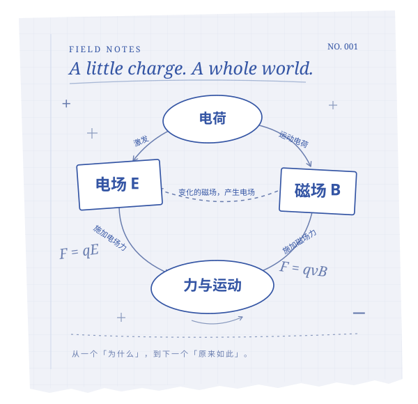

数学 MATH
集合、函数、数列、圆锥曲线……从定义走向推导。
A MAP FOR CURIOUS MINDS
给每一个，想弄明白的你。
从「记住一个公式」，到「看懂整个世界」。
以知识图谱，重新打开上海高考理科。
顺着脉络理解，沿着关联探索，把每一个「为什么」连起来。

01 / THE KNOWLEDGE ATLAS
先建立地图，再深入细节。
选择一个起点，开始你的探索。
从电荷与场出发，走过力与能量，
看见电与磁如何连成一个整体。
集合、函数、数列、圆锥曲线……从定义走向推导。
下一张知识地图，正在酝酿。
02 / MAKE IT CLICK
知识不是孤立的卡片。
找到它们之间的联系，
才是理解真正发生的地方。
跟随「基本概念 → 电场 → 磁场 → 电磁感应」的分层路径，从起点一步步向前。
切换到关系图谱，探索知识点之间的定义、推导与应用。一个公式，也是通向另一个知识点的路。
展开知识卡片阅读公式与推导，区分高考主干和拓展内容。选中文字，记下你的理解与疑问。